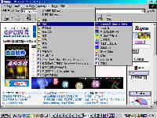
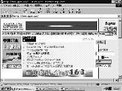

|
| 当前位置：电脑报电子版 > 1999 年 > 34 期 > 大众网络 > 新手上网步步高——上网实战篇 |
| 《 新手上网步步高——上网实战篇 》 |
| 上期我们已拨号成功，现在让我们使用浏览器（Browser）到Internet上去逛逛吧!要知道浏览可是Internet的一个很重要的功能哟，它是用来检索和查看Internet上信息的。目前很流行的是微软的探索者浏览器（Microsoft Internet Explorer简称IE）和网景的浏览器(Netscape Communicator)，如果你使用的是Windows98,那么它已自带了IE4.0，如果你使用的是Windows95，那么你还必须安装它，现在的最新版本是IE5.0。让我们先用它到Internet上去感受一下网上多彩的世界吧! 安装完IE后，桌面上会有“Internet Explorer"图标（从IE4.0升级到IE5.0和直接安装IE5.0，图标会有所不同），并出现桌面频道栏（只有 IE 4.0以上的版本中才有）。频道是用于从Internet向用户的计算机传递内容的Web站点，它最主要的作用是向用户的计算机传递内容，便于用户脱机浏览。在IE中，它位于“收藏”菜单下(见图1)。 让我们先到电脑报的网站去看看吧。 拨号成功后，启动IE，在“地址栏”上键入：http://www.cpcw.com回车，其中“http://”表示超文本传输协议，“www.cpcw.com”是电脑报的域名。在你的焦急等待中出现电脑报网站的主页画面(见图2)，移动鼠标，你会发现鼠标的箭头在一些地方会变成一只小手，说明此处有链接（Link），链接的可以是图片、三维图像或彩色文本（通常带下划线），点击它则进入相关页面；在搜索框中，当鼠标箭头变成“Ⅰ”形则可以进行输入你想查找的内容，如键入“硬件”，点击“查找”，就会出现你需要的页面。 好了，现在让我们再来看看IE还有哪些功能： 1． 桌面上的“后退”按钮可以回到你刚才去过的站点； 2． “打印”按钮可以打印出你正在浏览的页面； 3． “历史”按钮中记录了你去过的站点； 4． 当你打开一些更新得很快的页面时，你需要点击“刷新”按钮，得到最新的内容；当你打开的站点因为传输问题页面出现残缺时，也可点击“刷新”以重新打开站点； 5． “搜索”按钮可搜索 Web 站点，点击它，键入描述搜索内容的单词或短语。当搜索结果出现时，可以在不丢失搜索结果列表的同时，查看每个 Web 页； 6． “主页”按钮可以回到你设置好的站点主页，如果你想更改主页，可打开“工具”菜单中的“Internet选项……”，在“常规”标签的“主页地址”中直接输入你想设置的主页地址，比如：电脑报的www.cpcw.com，以后你一启动IE时，你会直接到达电脑报的主页； 7． 当你在Internet中浏览发现一个好地方，并想记下时，可打开“收藏”菜单中的“添加到文件夹”，单击“确定”，就保存在收藏夹的列表中了；以后，当你还想去那儿时，可直接在“收藏”菜单中点击该地址； 8． 如果你想一次多浏览几个网站，可在“文件”菜单的“新建”栏中点击“窗口”，再在“地址栏”上输入你要去的站点； 9. 如果你进入时使用的是非GB码的站点，出现乱码时，你可以在“查看”菜单的“编码”方式中选择你所需要的编码。 10． 另外，在“收藏”菜单的“链接”栏中有一些指向频繁访问的部分 Web 页的链接，非常方便。只需单击链接即可显示其站点。 说了这么多，还不快行动，Internet上有成千上万的网站等着你去浏览呀！(部分常用网址见下表) (重庆 万维) |
| 下载本期推荐软件 | 页 首 |
| 《电脑报》版权所有，电脑报网站编辑部设计制作发布 |